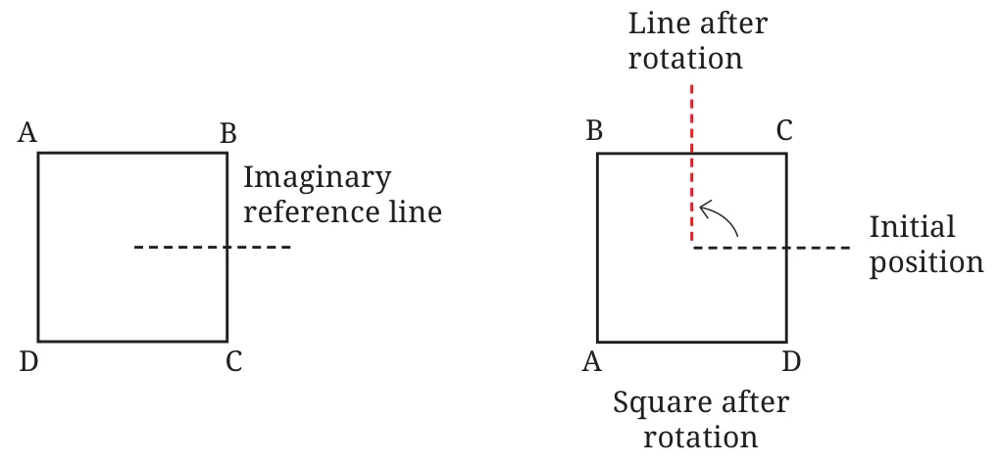
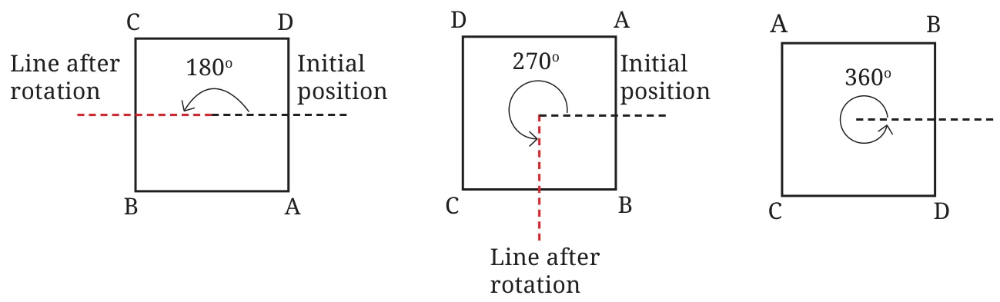
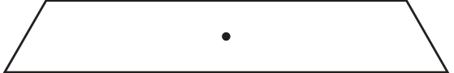
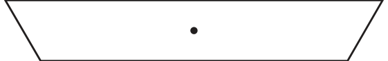
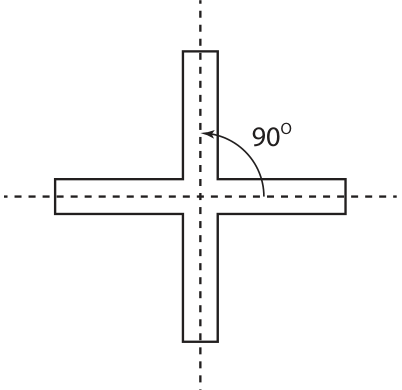
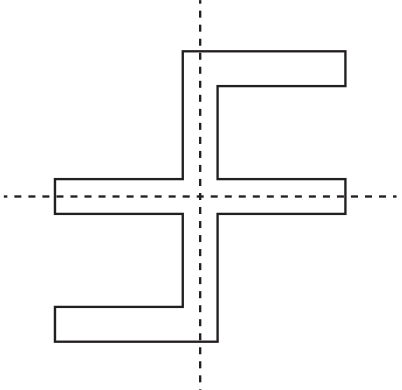
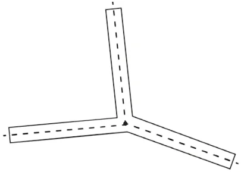
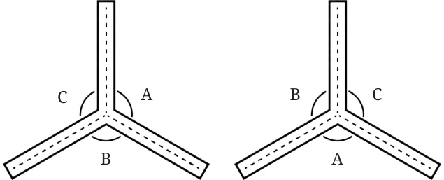
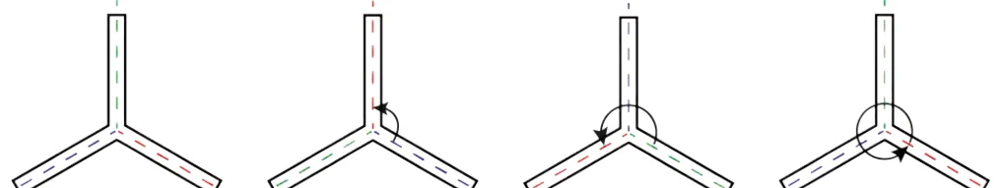

The paper windmill in the picture looks symmetrical but there is no line of symmetry! However, if you fold it, the two halves will not exactly overlap. On the other hand, if you rotate it by \(90 ^{\circ}\) about the red point at the centre, the windmill looks exactly the same. We say that the windmill has rotational symmetry.
When talking of rotational symmetry, there is always a fixed point about which the object is rotated. This fixed point is called the centre of rotation. Will the windmill above look exactly the same when rotated through an angle of less than \(90 ^{\circ}\) ? No! An angle through which a figure can be rotated to look exactly the same is called an angle of rotational symmetry, or just an angle of symmetry, for short.
For the windmill, the angles of symmetry are \(90 ^{\circ}\) (quarter turn), \(180 ^{\circ}\) (half turn), \(270 ^{\circ}\) (three-quarter turn) and \(360 ^{\circ}\) (full turn). Observe that when any figure is rotated by \(360 ^{\circ}\) , it comes back to its original position, so \(360 ^{\circ}\) is always an angle of symmetry. Thus, we see that the windmill has 4 angles of symmetry. Do you know of any other shape that has exactly four angles of symmetry? How many angles of symmetry does a square have? How much rotation does it require to get the initial square? We get back a square overlapping with itself after \(90 ^{\circ}\) of rotation. This takes point A to the position of point B, point B to the position of point C, point C to the position of point D, and point D back to the position of point A. Do you know where to mark the centre of rotation?

What are the other angles of symmetry?

Example: Find the angles of symmetry of the following strip.

Solution: Let us rotate the strip in a clockwise direction about its centre.

A rotation of \(180 ^{\circ}\) results in the figure above. Does this overlap with the original figure? No. Why?
Another rotation through \(180 ^{\circ}\) from this position gives the original shape. This figure comes back to its original shape only after one complete rotation through \(360 ^{\circ}\). So, we say that this figure does not have rotational symmetry.

Rotational Symmetry of Figures with Radial Arms
Consider this figure, a picture with 4 radial arms. How many angles of symmetry does it have? What are they? Note that the angle between adjacent central dotted lines is \(90 ^{\circ}\) . Can you change the angles between the radial arms so that the figure still has 4 angles of symmetry? Try drawing it. To check if the figure drawn indeed has 4 angles of symmetry, you could draw the figure on two different pieces of paper. Cut out the radial arms from one of the papers. Keep the figure on the paper fixed and rotate the cutout to check for rotational symmetry. How will you modify the figure above so that it has only two angles of symmetry?
Here is one way:

We have seen figures having 4 and 2 angles of symmetry. Can we get a figure having exactly 3 angles of symmetry? Can you use radial arms for this? Let us try with 3 radial arms as in the figure below. How many angles of symmetry does it have and what are they? Here is a figure with three radial arms.

Trace and cut out a copy of this figure. By rotating the cutout over this figure determine its angles of rotation. We see that only a full turn or a rotation of \(360 ^{\circ}\) will bring the figure back into itself. So this figure does not have rotational symmetry as 360 degrees is its only angle of symmetry. However, can anything in the figure be changed to make it have 3 angles of symmetry?
Can it be done by changing the angles between the dotted lines? If a figure with three radial arms should have rotational symmetry, then a rotated version of it should overlap with the original. Here are rough diagrams of both of them. If these two figures must overlap, what can you tell about the angles?

Observe that \(\angle A\) must overlap \(\angle B\), \(\angle B\) must overlap \(\angle C\) and \(\angle C\) must overlap \(\angle A\). So, \(\angle A = \angle B = \angle C\). What must this angle be? We know that a full turn has 360 degrees. This is equally distributed amongst these three angles. So each angle must be \(\frac{360 ^{\circ} }{3} = 120 ^{\circ}\) . So, the radial arms figure with 3 arms shows rotational symmetry when the angle between the adjacent dotted lines is \(120 ^{\circ}\) . Use paper cutouts to verify this observation. Now how many angles of rotation does the figure have and what are they?

Note: The colours have been added to show the rotations.
Let us explore more figures. Can you draw a figure with radial arms that has a) exactly 5 angles of symmetry, b) 6 angles of symmetry? Also find the angles of symmetry in each case. Hint: Use 5 radial arms for the first case. What should the angle between two adjacent radial arms be?
Consider a figure with radial arms having exactly 7 angles of symmetry. What will be its smallest angle of symmetry? Is the number of degrees a whole number in this case? If not, express it as a mixed fraction. Let us find the angles of symmetry for other kinds of figures.